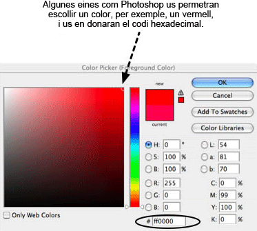

31. Imatges de fons en CSS
Nicole Sullivan. 26 de setembre de 2008 Publicat a: repetir, adjuntar, sprite, prova, posició.
Admeteu-ho! Des del primer apartat d'aquest curs us heu estat morint de ganes d'aprendre com aconseguir que el vostre web quedi impressionant i fabulós. Fins i tot és possible que hagueu saltat els altres apartats per arribar a aquest directament!
Les imatges de fons serveixen per fer que el vostre lloc quedi atractiu, però potser us sorprengui saber que estan molt relacionades amb els conceptes fonamentals que ja heu après.
Tal com ja heu vist en aquest curs, un dels canvis més importants que aporta el CSS és la capacitat per separar presentació o l'aspecte de les coses, de la semàntica, o el significat de les coses. La imatge de fons de CSS és una de les eines més importants que podeu fer servir perquè permet aplicar imatges decoratives a determinades parts del vostre HTML sense afegir pes addicional a l'HTML. Abans, els creadors web (com vosaltres!) es veien obligats a omplir el codi d'etiquetes img.
El CSS i, sobretot la propietat background (fons), fan que el vostre HTML deixi d'estar atapeït d'elements presentacionals. D'aquesta manera, redissenyar un lloc o realitzar altres transicions de la vida d'una pàgina web creada amb mètodes moderns, pot fer-se d'una manera molt més senzilla. Podreu actualitzar tota la pàgina canviant únicament el full d'estil en lloc d'haver de gravar totes i cadascuna de les pàgines HTML. Depenent de la mida del lloc, això pot estalviar-vos una gran quantitat de temps.
En aquest apartat mostraré els conceptes bàsics del funcionament de les imatges de fons de CSS, incloent l'aplicació d'una imatge de fons a través de CSS, ajustar la seva col·locació, repetir-la en vertical o horitzontal i combinar imatges de fons amb sprites de CSS per millorar el rendiment del lloc.
Els continguts d'aquest apartat són els següents:
- 31.1. Com funciona?
- 31.1.1. Propietats de fons
- 31.2. Crear un missatge d'alerta
- 31.2.1. El disseny
- 31.2.2. El codi
- 31.2.3. Fer proves amb el codi
- 31.2.4. Comprovar la qualitat
- 31.3. Sprites
- Resum
- Preguntes de repàs
- Lectures complementàries
31.1. Com funciona?
El CSS per a fons es divideix en diverses propietats. Fent servir aquestes propietats, com ara position i color, podeu començar a controlar l'aspecte de la vostra pàgina. En aquest apartat repassarem detalladament les imatges de fons de CSS i crearem un missatge d'alerta com a exemple pas per pas.
Primer de tot, hem de saber més coses sobre les diferents propietats que podem utilitzar.
31.1.1. Propietats de fons
| Propietat | Definició | Descripció |
|---|---|---|
background-color |
Estableix el color de fons de l'element d'HTML. | Hi ha diverses maneres d'indicar el Hi ha moltes eines per escollir colors que poden ajudar-vos a trobar la notació hexadecimal d'un color determinat. El vermell pur, per exemple, seria el #FF0000.

Els valors vàlids inclouen un valor de |
image |
Indica la ruta o URL de la imatge de fons. | Estableix la Els valors vàlids inclouen una |
repeat |
Indica en quina direcció s'ha de repetir la imatge de fons. | Les imatges poden repetir-se en vertical o horitzontal, o en les dos direccions, per omplir tota l'amplada o alçada d'un element HTML. Utilitzeu Els valors vàlids són |
attachment |
Defineix el comportament de la imatge de fons quan l'usuari desplaça. | Les imatges poden desplaçar-se amb el contingut o quedar-se fixes a la pantalla de visualització. Els valors vàlids són: scroll, fixed i inherit. |
position |
Indica al navegador on col·locar la imatge de fons. | Les imatges poden mostrar-se a qualsevol punt dintre de les vores de l'element d'HTML en què estiguin aplicades. Feu servir Hi ha moltes maneres útils d'indicar la posició, les paraules clau i els valors numèrics del fons. Les paraules clau (com ara Quan s'utilitzen sprites i píxels, el punt inicial sempre és l'extrem superior esquerre de l'element HTML, encara que la manera de funcionar de la col·locació de la imatge és una mica diferent amb píxels o amb percentatges. Els píxels sempre mouen la imatge un número concret de píxels cap a la part inferior dreta de la caixa contenidora (o cap a la part superior esquerra si són valors negatius), sigui quina sigui la mida de la imatge i de la caixa contenidora. Els percentatges, en canvi, mouen la imatge un percentatge de la diferència entre la caixa contenidora i la mida de la imatge. Si la imatge i la caixa contenidora són igual de grans, els percentatges no mouran gens la imatge. Els valors vàlids inclouen length (normalment en píxels), percentage (de l'amplada de l'element) i les paraules clau |
background |
La propietat abreujada que es pot fer servir per descriure tota la resta de propietats d'una línia. | Les propietats abreujades són realment pràctiques. La majoria de desenvolupadors les utilitzen per mantenir el CSS el més senzill possible i per agrupar propietats relacionades. Es pot escriure una regla general fent servir l'abreujament i després anul·lar-la segons sigui necessari amb propietats específiques. Les propietats sempre s'haurien d'indicar en el mateix ordre perquè els navegadors puguin interpretar fàcilment els estils.
Un exemple d'aquest abreujament amb totes les propietats utilitzades (tret de
|
31.2. Crear un missatge d'alerta
Ara que ja hem vist la sintaxi bàsica necessària, us ensenyaré com crear un exemple complet de caixa d'alerta que servirà per demostrar tots els aspectes de les imatges de fons.
31.2.1. El disseny
Posem per cas que un dissenyador gràfic us ha presentat un esbós visual del missatge d'alerta que voleu crear per al vostre lloc web. Fixeu-vos que l'alerta té el fons de color taronja clar per diferenciar-lo dels paràgrafs que l'envolten. També té una icona d'alerta a deu píxels de l'extrem superior esquerre.
Fixeu-vos que l'esbós només té una línia de text, però en altres casos pot tenir-ne més. Un dels trets més importants del desenvolupador web és preveure com acabarà evolucionant un disseny. En part, respectar la visió artística d'un lloc suposa pensar en la consistència des que s'inicia fins que es redissenya. Per tant, el missatge d'alerta podria incloure més d'una línia de text o fins i tot múltiples paràgrafs, llistes o d'altres elements HTML. Hauríeu de tractar de ser tan agnòstics en qüestió d'elements com us sigui possible. D'aquesta manera augmentaran les probabilitats de reutilització del codi i el lloc web tindrà la màxima velocitat i eficiència. L'esbós és com es veu a la figura 1:
Figura 1. L'esbós del dissenyador gràfic de la caixa d'alerta.
El dissenyador també us ha proporcionat la icona que heu de fer servir, tal com es mostra a la figura 2:
Figura 2. La icona d'alerta.
31.2.2. El codi
Basant-vos en tot el que heu après dels fons de CSS a la primera part d'aquest apartat, ja podeu anar pensant com crear aquest missatge d'avís. Us animo que ho proveu ara mateix i que després compareu el resultat amb el meu exemple.
Molt bé, ja ho heu provat? Analitzem-ho ara pas per pas. Feu proves amb el codi, augmenteu o reduïu els valors i intenteu provar alternatives. També pot ser que vulgueu anar seguint tots els passos escrivint cada línia nova de codi en una eina com ara Opera Dragonfly o Firebug per poder anar veient els resultats de cada pas immediatament.
Nota
Cada còpia de pantalla té un enllaç a exemples de codi perquè pugueu comprovar la font a cada pas.
Crear el lligam o selector de CSS
Per començar heu de crear una classe alert perquè el CSS s'hi pugui lligar. Creeu els fitxers esquelet nous de CSS i HTML, enllaceu el CSS al fitxer HTML i afegiu-li el codi següent:
El CSS:
.alert { ... }L'HTML:
<p class="alert">
<strong>Alert!</strong> The text of our alert message goes here.
</p>En aquest cas he aplicat estils a l'alerta amb un class i no amb un id perquè podria tenir més d'una alerta a la pàgina, per exemple un element de formulari amb diversos errors. El CSS s'ha de fer el més flexible que es pugui i limitar-ho tot per tal que es correspongui al disseny quan es crea l'HTML.
Molt bé, doncs ja teniu uns fonaments, però encara sembla un paràgraf normal perquè encara no li heu afegit cap estil. Fem-ho.
Nota
He decidit intencionadament no limitar la classe alert a paràgrafs; les caixes d'alerta també podrien contenir fàcilment altres elements. Hauríeu de deixar que el CSS tingui la màxima flexibilitat possible.
Afegir el color de fons
Ja heu après com fer servir el color de fons amb els estils de text. Els mateixos principis s'apliquen a qualsevol element HTML i poden combinar-se amb imatges de fons per crear efectes visuals. Si el color de fons no s'ha establert ni heretat, serà transparent per defecte.
Vegeu també
Vegeu com fer servir el color de fons amb els estils de text a l'apartat 29 d'aquest mòdul.
Afegim el color de fons taronja clar a la caixa d'alerta perquè ressalti entre el text que té al voltant. No hauria de ser gaire fosc perquè és important que mantingueu un nivell raonable de contrast entre el text i el color de fons. Afegiu la propietat següent a la vostra regla de CSS:
.alert{background-color: #FFFFCC;}Ara la caixa d'alerta s'assemblarà més a la figura 3:
Figura 3. Una caixa d'avís amb color de fons afegit.
Arxiu font de: "Figura 3"
Aplicar la imatge de fons
Passem a afegir la imatge. La ruta a la imatge de fons ha d'estar entre url(), tal com s'observa en el codi següent. Afegiu la línia ressaltada a la regla de CSS:
.alert{
background-color: #FFFFCC;
background-image: url(alert.png);
}Ara la caixa d'alerta quedarà com a la figura 4:
Figura 4. S'ha afegit la imatge de fons, però la repetició queda horrible.
Arxiu font de: "Figura 4"
Recordeu que cada propietat de fons té un valor per defecte que se li aplicarà si no especifiqueu cap valor. Segurament ja us haureu adonat que la imatge es repeteix per tota l'alerta com si fossin les tessel·les d'un mosaic. Quina és la conclusió de tot això? Les imatges de fons estan configurades per defecte per a repetir-se tant horitzontalment com verticalment. Els fons que es repeteixen són especialment útils per a gradacions de colors i patrons que omplen la pantalla o un element d'HTML en concret, però en aquest cas no és el que volem.
Controlar la repetició del fons
Figura 5. De manera semblant a la nostra imatge de fons, aquestes tessel·les es repeteixen tant en horitzontal como en vertical.
Llegir especificacions pot ser un tasca intimidant, però l'especificació és molt bon lloc per esbrinar com se suposa que funciona el CSS abans de passar a profunditzar en la miríada de diferències existents entre navegadors. Feu una ullada a la part dels colors i els fons de la W3C Specification i intenteu trobar la paraula clau per fer-los servir quan no vulgueu que es repeteixi una imatge de fons. Tot seguit la farem servir en un exemple.
Ja l'heu trobada? Fixeu-vos que hi ha una secció per cada propietat de fons incloent-hi background-repeat. A sota de Value hi veureu totes les opcions possibles incloent-hi: repeat, repeat-x, repeat-y, no-repeat i inherit. Per defecte, les imatges de fons (inicials) es repeteixen. No s'especifica cap direcció, de manera que la imatge pot repetir-se en horitzontal o en vertical. Segurament ja us haureu imaginat que no-repeat (sense repetició) és el valor que necessiteu per impedir que la imatge es repeteixi en qualsevol direcció. Afegiu la següent línia ressaltada a la regla de CSS:
.alert{
background-color: #FFFFCC;
background-image: url(alert.png);
background-repeat: no-repeat;
}Ara la caixa d'alerta quedarà com a la figura 6:
Figura 6. La caixa d'alerta amb una única còpia de la imatge de fons (sense repeticions).
Arxiu font de: "Figura 6"
A més, també podeu repetir-la en les dues direccions (com si fossin tessel·les d'un mosaic) o en cap direcció. Les gradacions acostumen a repetir-se horitzontalment o verticalment (vegeu la figura 7). No és necessari que conegueu la mida de l'element HTML; només cal que talleu un tros de la gradació i la feu repetir-se en la direcció que vulgueu; ja sigui "x" per horitzontal o "y" per vertical. Els patrons sovint es repeteixen en totes dues direccions i les icones normalment no es repeteixen. Més endavant examinareu background-repeat més a fons amb un altre exemple.
Figura 7. Les tessel·les o rajoletes d'aquest exemple només es repeteixen en horitzontal.
Fixeu-vos ara en un exemple pràctic del meu web, observeu la figura 8:
Figura 8. Un exemple d'imatge repetida del meu web.
Arxiu font de: "Figura 8"
El CSS que vaig fer servir per afegir aquest efecte decoratiu és relativament senzill. Vaig fer que el fons es repetís horitzontalment amb repeat-x:
body{background-repeat:
repeat-x}Attachment
attachment permet especificar com funciona el fons quan l'usuari desplaça la pàgina cap avall. El funcionament per defecte és scroll, que fa que la imatge de fons es desplaci juntament amb el contingut.
Per altra banda, si s'estableix background-attachment a fixed, l'element es queda fix a la finestra del navegador, de manera que no es mou quan es desplaça el contingut de dins de l'element al qual està adjunt. Això crea alguns efectes estranys que només seran visibles quan desplaceu la pàgina per sobre l'element d'HTML al qual està adjunt. La W3C ho fa servir per assenyalar l'estat de les especificacions, com per exemple la imatge de la "W3C Candidate Recommendation" de dalt de tot a l'esquerra. Desplaceu la pàgina cap avall i veureu que la imatge es queda fixa al racó superior esquerre. Està adjunta a l'element body, de manera que sempre és visible.
Aquest pas no tindrà cap efecte en la nostra visualització perquè els navegadors estableixen per defecte que les imatges de fons es desplacin, però afegim-ho igualment al codi perquè pugueu veure com es fa servir la propietat. Afegiu la línia ressaltada a la regla de CSS:
.alert{
background-color: #FFFFCC;
background-image: url(alert.png);
background-repeat: no-repeat;
background-attachment: scroll;
}Tal com s'observa a la figura 9, la visualització de la caixa d'alerta no és gaire diferent de com era abans.
Figura 9. No ha canviat gaire, encara.
Arxiu font de: "Figura 9"
Col·locar la imatge
La propietat de col·locació permet disposar la imatge de fons exactament on vulgueu posar-la, tant horitzontalment com verticalment, a l'element d'HTML. Aquesta propietat accepta paraules clau i valors com ara: top, center, right, 100%, -10%, 50px i -30em.
A la figura 10 es mostren els valors que poden utilitzar-se per col·locar les imatges de fons en diferents posicions.
![Exemples de possibles posicions del fons. En un rectangle de 350 per 90 píxels veiem exemples d'imatges posicionades amb el seu codi. A dalt a l'esquerra amb left, top, o amb 0, 0; a dalt i centrat horitzontalment, amb center, top, o amb 50%, 0; a dalt a la dreta amb right, top, o amb 100%, 0; centrat vericalment, a l'esquerra amb left, center, o amb 0, 50%; centrat amb center, center, o 50%, 50%; centrat verticalment i a la dreta amb right, center, o 100%, 50%; a baix a l'esquerra amb left, bottom, o 0, 100%; centrat horitzontalmente i a baix amb center, bottom, o 50%, 100%. -50px, 50px fa que el centre de la imatge estigui a 60 píxels del marge superior i que sobresurti 25 píxels per l'esquerra. 350px, 60px situa el centre de la imatge a 350 píxels de la vora esquerra i 60 píxels per sota de la vora superior; finalment, 350px, -60 px situa el centre de la imatge 60 píxels per sobre de la vora superior, 350 píxels a la dreta de la vora esquerra.](06510_m6_26.gif)
Figura 10. Diversos exemples de posició del fons mitjançant paraules clau, percentatges i píxels.
Passem ara a col·locar la imatge de fons: voleu que quedi a l'extrem superior esquerre, però sense tocar els costats, de manera que necessiteu establir una distància de 10 píxels tant des del límit superior com des de l'esquerre. Això es pot fer afegint-hi la següent línia ressaltada a la regla CSS. Feu-ho ara.
.alert{
background-color: #FFFFCC;
background-image: url(alert.png);
background-repeat: no-repeat;
background-attachment: scroll;
background-position: 10px 10px;
}El primer valor és la distància horitzontal i el segon la vertical. En aquest cas són el mateix. Ara la caixa d'alerta quedarà com a la figura 11:
Figura 11. Hem fet servir la col·locació per situar la imatge de fons.
Arxiu font de: "Figura 11"
Consell
Utilitzeu o bé només paraules clau o bé només valors numèrics, ja que els navegadors antics pot ser que ignorin la vostra declaració si els feu servir tots dos alhora. Si feu servir right i bottom aconseguireu el mateix que 100% horitzontalment o verticalment.
Fer servir l'abreujament per combinar-ho tot com un professional
Com ja heu pogut veure, algunes propietats de CSS poden combinar-se. Per exemple, el fons i totes les subpropietats relacionades. El codi de CSS que hem escrit fins ara es pot reescriure abreujadament així:
.alert{background: #FFFFCC url(alert.png) no-repeat scroll 10px 10px;}Consell
Quan combineu subpropietats de background, poseu sempre les propietats en l'ordre següent. És important tant per la compatibilitat de tots els navegadors com per l'organització i manteniment del full d'estil:
colorimagerepeatattachmentposició
horizontalposició
vertical
Proveu a substituir el CSS antic amb l'abreujament anterior i el vostre exemple us hauria de quedar exactament igual. Vegeu la figura 12.
Arxiu font de: "Figura 12"
31.2.3. Fer proves amb el codi
La millor manera de recordar tots els detalls del CSS és provar les opcions un mateix. Proveu a canviar algunes de les propietats de l'exemple i vegeu com queda. Establiu la background-position a 100% 100%, i fixeu-vos que dóna el mateix resultat que fer servir les paraules clau de right i bottom. I si ho canviéssiu a -5px 0? Per què creieu que ara no podeu veure part de la imatge?
31.2.4. Comprovar la qualitat
Les comprovacions són extremadament importants per oferir una bona experiència a l'usuari. El fet que el lloc funcioni bé en el vostre equip amb la vostra configuració específica no vol dir que es vegi bé en tots els ordinadors. Quan comproveu la caixa d'alerta hauríeu de seguir aquests passos bàsics mínims:
Augmenteu o reduïu la quantitat de text a l'interior de l'alerta.
Augmenteu la mida del text del vostre navegador com a mínim dos nivells. Hauria estat millor utilitzar ems per col·locar la imatge? Llavors què passa quan augmenteu la mida del text?
Apliqueu l'alerta
classa d'altres elements com aradiv,p,ul,strongoem. Què necessiteu canviar per fer que la classe sigui agnòstica?Incloeu uns quants paràgrafs i una llista dins del div de l'alerta. Encara funciona el codi?
Verifiqueu l'alerta visualment als navegadors de grau 1 (també anomenat grau A). El meu consell és que escriviu per a bons navegadors i adapteu per a l'Internet Explorer quan estigueu segurs que el codi funciona.
Realitzar una sèrie rigorosa de proves forma part del procés d'aprendre a escriure CSS. Si aneu amb molt de compte alhora d'aprendre, acabareu anant molt ràpid.
31.3. Sprites
Els usuaris ho volen tot. Volen que el vostre lloc sigui atractiu, interactiu i, a sobre, ràpid, però incloure grans quantitats d'imatges de fons de CSS pot alentir molt el web, ja que quantes més peticions d'HTTP feu, més lent serà el lloc (una petició d'HTTP és quan l'ordinador està accedint a una pàgina web i necessita demanar al servidor que li enviï un altre valor que compon el lloc, com ara un fitxer o una imatge de CSS; cada petició addicional significa més temps de càrrega del lloc). Per tal de superar aquesta limitació, podeu combinar icones relacionades per formar una sola imatge, els anomenats sprites de CSS. La propietat de background-position permet col·locar la imatge en la posició adequada de manera que les icones es vegin a través de la finestra de l'element HTML al qual estan adjunts els sprites de CSS.
A la figura 13, per exemple, observareu que per veure la icona de la Terra a través de la finestra HTML heu de col·locar la imatge fent servir left top. Per moure la posició de la imatge de manera que es vegi la icona d'alerta, la posició del fons s'ha de canviar a -80px 0. El valor negatiu horitzontal fa que la imatge es desplaci a l'esquerra.
Figura 13. Utilització de sprites de CSS per reduir les peticions de HTTP.